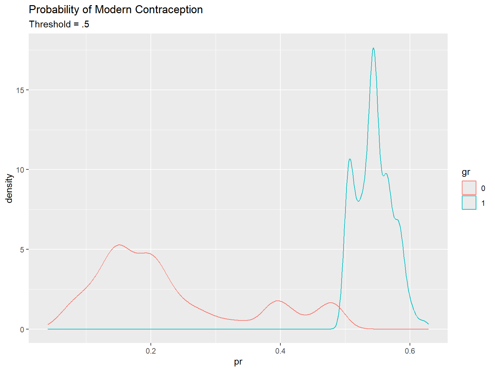
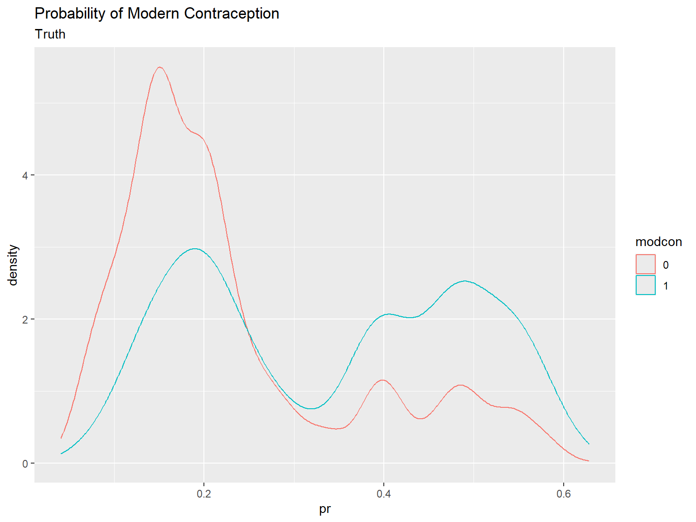
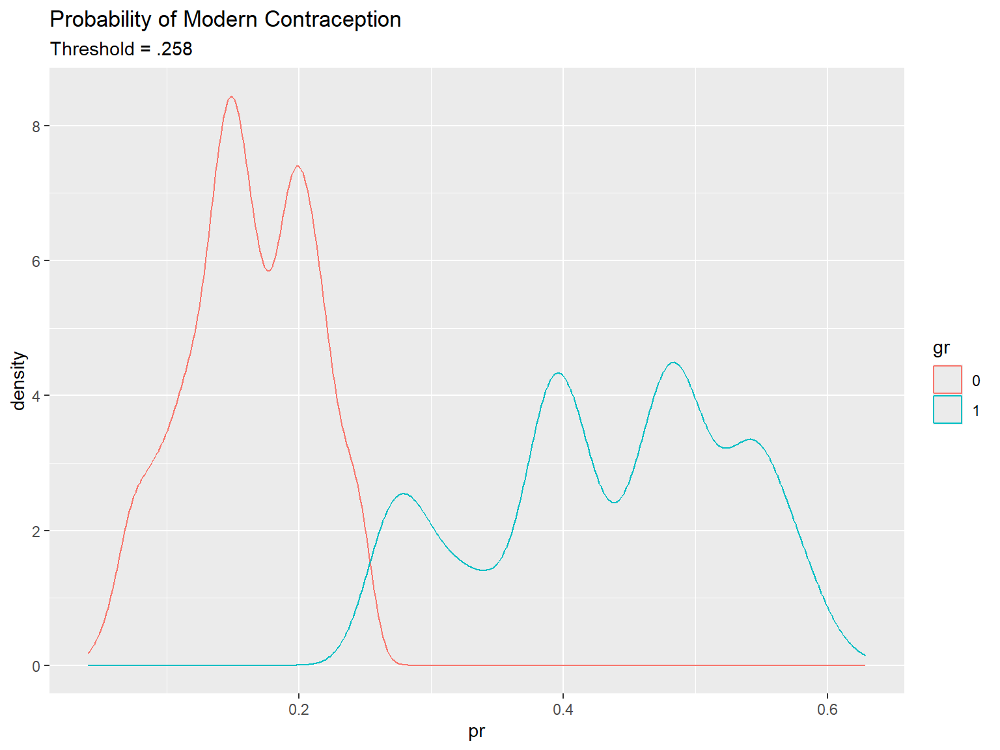
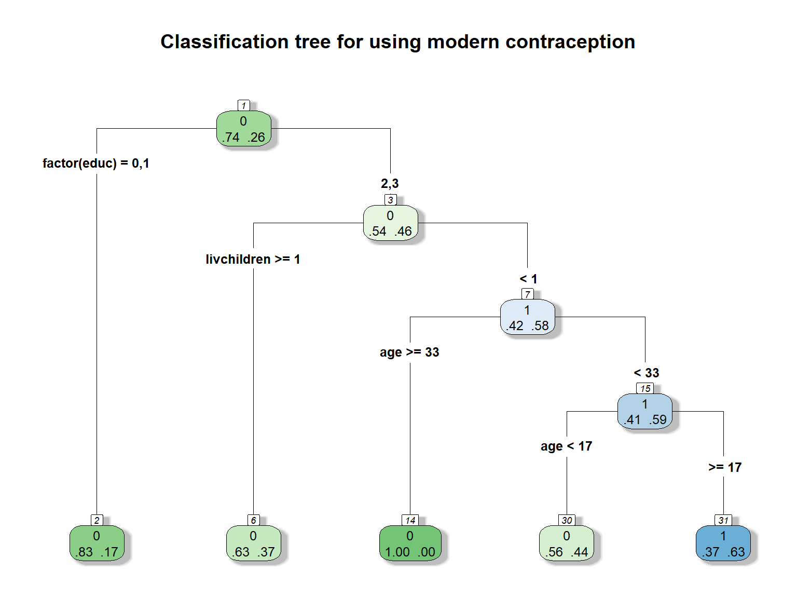
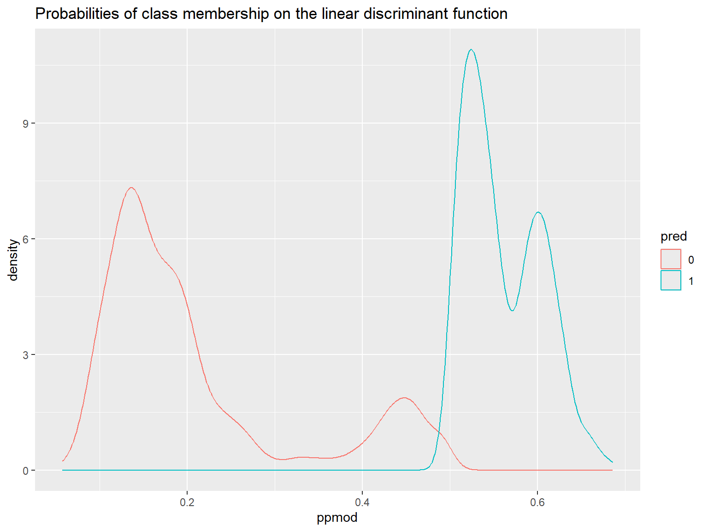
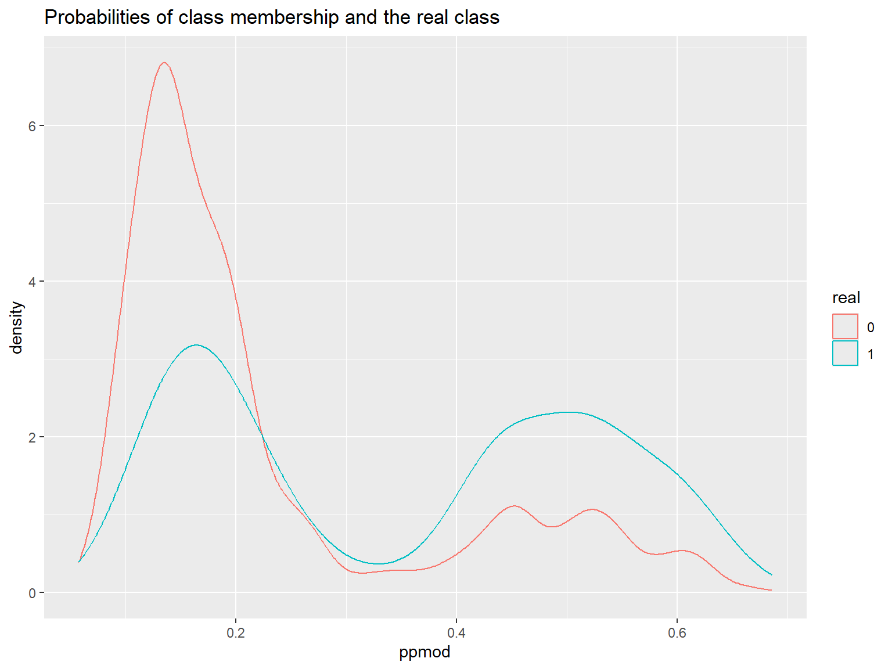

library(haven)
dat<-url("https://github.com/coreysparks/data/blob/master/ZZIR62FL.DTA?raw=true")
model.dat<-read_dta(dat)4 Basic Methods for Classification
4.1 Classification methods and models
In classification methods, we are typically interested in using some observed characteristics of a case to predict a binary categorical outcome. This can be extended to a multi-category outcome, but the largest number of applications involve a 1/0 outcome.
Below, we look at a few classic methods of doing this:
Logistic regression
Regression/Partitioning Trees
Linear Discriminant Functions
There are other methods that we will examine but these are probably the easiest to understand.
In these examples, we will use the Demographic and Health Survey Model Data. These are based on the DHS survey, but are publicly available and are used to practice using the DHS data sets, but don’t represent a real country.
In this example, we will use the outcome of contraceptive choice (modern vs other/none) as our outcome.
Here we recode some of our variables and limit our data to those women who are not currently pregnant and who are sexually active.
library(dplyr)
Attaching package: 'dplyr'The following objects are masked from 'package:stats':
filter, lagThe following objects are masked from 'package:base':
intersect, setdiff, setequal, unionmodel.dat2<-model.dat%>%
mutate(region = v024,
modcontra= as.factor(ifelse(v364 ==1,1, 0)),
age = v012,
livchildren=v218,
educ = v106,
currpreg=v213,
knowmodern=ifelse(v301==3, 1, 0),
age2=v012^2)%>%
filter(currpreg==0, v536>0)%>% #notpreg, sex active
dplyr::select(caseid, region, modcontra,age, age2,livchildren, educ, knowmodern)knitr::kable(head(model.dat2))| caseid | region | modcontra | age | age2 | livchildren | educ | knowmodern |
|---|---|---|---|---|---|---|---|
| 1 1 2 | 2 | 0 | 30 | 900 | 4 | 0 | 1 |
| 1 4 2 | 2 | 0 | 42 | 1764 | 2 | 0 | 1 |
| 1 4 3 | 2 | 0 | 25 | 625 | 3 | 1 | 1 |
| 1 5 1 | 2 | 0 | 25 | 625 | 2 | 2 | 1 |
| 1 6 2 | 2 | 0 | 37 | 1369 | 2 | 0 | 1 |
| 1 6 3 | 2 | 0 | 17 | 289 | 0 | 2 | 0 |
4.1.1 using caret to create training and test sets.
We use an 80% training fraction
library(caret)Loading required package: ggplot2Loading required package: latticeset.seed(1115)
train<- createDataPartition(y = model.dat2$modcontra , p = .80, list=F)
model.dat2train<-model.dat2[train,]
model.dat2test<-model.dat2[-train,]
table(model.dat2train$modcontra)
0 1
4036 1409 prop.table(table(model.dat2train$modcontra))
0 1
0.7412305 0.2587695 summary(model.dat2train) caseid region modcontra age age2
Length:5445 Min. :1.000 0:4036 Min. :15.00 Min. : 225.0
Class :character 1st Qu.:1.000 1:1409 1st Qu.:21.00 1st Qu.: 441.0
Mode :character Median :2.000 Median :29.00 Median : 841.0
Mean :2.164 Mean :29.78 Mean : 976.8
3rd Qu.:3.000 3rd Qu.:37.00 3rd Qu.:1369.0
Max. :4.000 Max. :49.00 Max. :2401.0
livchildren educ knowmodern
Min. : 0.000 Min. :0.0000 Min. :0.0000
1st Qu.: 1.000 1st Qu.:0.0000 1st Qu.:1.0000
Median : 2.000 Median :0.0000 Median :1.0000
Mean : 2.546 Mean :0.7381 Mean :0.9442
3rd Qu.: 4.000 3rd Qu.:2.0000 3rd Qu.:1.0000
Max. :10.000 Max. :3.0000 Max. :1.0000 4.2 Logistic regression for classification
Here we use a basic binomial GLM to estimate the probability of a woman using modern contraception. We use information on their region of residence, age, number of living children and level of education.
This model can be written: \[ln \left ( \frac{Pr(\text{Modern Contraception})}{1-Pr(\text{Modern Contraception})} \right ) = X' \beta\]
Which can be converted to the probability scale via the inverse logit transform:
\[Pr(\text{Modern Contraception}) = \frac{1}{1+exp (-X' \beta)}\]
glm1<-glm(modcontra~factor(region)+scale(age)+scale(age2)+scale(livchildren)+factor(educ), data=model.dat2train[,-1], family = binomial)
summary(glm1)
Call:
glm(formula = modcontra ~ factor(region) + scale(age) + scale(age2) +
scale(livchildren) + factor(educ), family = binomial, data = model.dat2train[,
-1])
Coefficients:
Estimate Std. Error z value Pr(>|z|)
(Intercept) -1.91240 0.06807 -28.095 < 2e-16 ***
factor(region)2 0.38755 0.08534 4.541 5.60e-06 ***
factor(region)3 0.62565 0.09531 6.564 5.23e-11 ***
factor(region)4 0.30066 0.09454 3.180 0.001471 **
scale(age) 0.63678 0.26540 2.399 0.016425 *
scale(age2) -0.98328 0.26194 -3.754 0.000174 ***
scale(livchildren) 0.17004 0.05408 3.144 0.001665 **
factor(educ)1 0.43835 0.10580 4.143 3.43e-05 ***
factor(educ)2 1.38923 0.08646 16.068 < 2e-16 ***
factor(educ)3 1.54061 0.16086 9.577 < 2e-16 ***
---
Signif. codes: 0 '***' 0.001 '**' 0.01 '*' 0.05 '.' 0.1 ' ' 1
(Dispersion parameter for binomial family taken to be 1)
Null deviance: 6226.5 on 5444 degrees of freedom
Residual deviance: 5629.0 on 5435 degrees of freedom
AIC: 5649
Number of Fisher Scoring iterations: 4We see that all the predictors are significantly related to our outcome
Next we see how the model performs in terms of accuracy of prediction. This is new comparison to how we typically use logistic regression.
We use the predict() function to get the estimated class probabilities for each case
tr_pred<- predict(glm1, newdata = model.dat2train, type = "response")
head(tr_pred) 1 2 3 4 5 6
0.22002790 0.31137928 0.15091505 0.20389088 0.08726724 0.18808481 These are the estimated probability that each of these women used modern contraception, based on the model.
In order to create classes (uses modern vs doesn’t use modern contraception) we have to use a decision rule. A decision rule is when we choose a cut off point, or threshold value of the probability to classify each observation as belonging to one class or the other.
A basic decision rule is if \(Pr(y=\text{Modern Contraception} |X) >.5\) Then classify the observation as a modern contraception user, and otherwise not. This is what we will use here.
tr_predcl<-factor(ifelse(tr_pred>.5, 1, 0))
library(ggplot2)
pred1<-data.frame(pr=tr_pred, gr=tr_predcl, modcon=model.dat2train$modcontra)
pred1%>%
ggplot()+geom_density(aes(x=pr, color=gr, group=gr))+ggtitle(label = "Probability of Modern Contraception", subtitle = "Threshold = .5")
pred1%>%
ggplot()+geom_density(aes(x=pr, color=modcon, group=modcon))+ggtitle(label = "Probability of Modern Contraception", subtitle = "Truth")
Next we need to see how we did. A simple cross tab of the observed classes versus the predicted classes is called the confusion matrix.
table( tr_predcl,model.dat2train$modcontra)
tr_predcl 0 1
0 3761 1142
1 275 267This is great, but typically it’s easier to understand the model’s predictive ability by converting these to proportions. The confusionMatrix() function in caret can do this, plus other stuff.
This provides lots of output summarizing the classification results. At its core is the matrix of observed classes versus predicted classes. The confusion matrix maps observed classes versus predicted classes:
| Predicted Negative | Predicted Positive | |
|---|---|---|
| Actual Negative | True Negative (TN) | False Positive (FP) |
| Actual Positive | False Negative (FN) | True Positive (TP) |
Lots of information on the predictive accuracy can be found from this 2x2 table. Generally, we are interested in overall accuracy, sensitivity and specificity.
confusionMatrix(data = tr_predcl,model.dat2train$modcontra )Confusion Matrix and Statistics
Reference
Prediction 0 1
0 3761 1142
1 275 267
Accuracy : 0.7398
95% CI : (0.7279, 0.7514)
No Information Rate : 0.7412
P-Value [Acc > NIR] : 0.6046
Kappa : 0.1517
Mcnemar's Test P-Value : <2e-16
Sensitivity : 0.9319
Specificity : 0.1895
Pos Pred Value : 0.7671
Neg Pred Value : 0.4926
Prevalence : 0.7412
Detection Rate : 0.6907
Detection Prevalence : 0.9005
Balanced Accuracy : 0.5607
'Positive' Class : 0
Overall the model has a 73.9% accuracy, which isn’t bad! What is bad is some of the other measures. The sensitivity is really low 267/(267+1142) = .189, so we are only predicting the positive class (modern contraception) in 19% of cases correctly. In other word the model is pretty good at predicting if you don’t use modern contraception, 3761/(3761+275)= .931, but not at predicting if you do.
We could try a different decision rule, in this case, I use the mean of the response as the cutoff value.
tr_predcl<-factor(ifelse(tr_pred>.258, 1, 0)) #mean of response
pred2<-data.frame(pr=tr_pred, gr=tr_predcl, modcon=model.dat2train$modcontra)
pred2%>%
ggplot()+geom_density(aes(x=pr, color=gr, group=gr))+ggtitle(label = "Probability of Modern Contraception", subtitle = "Threshold = .258")
pred2%>%
ggplot()+geom_density(aes(x=pr, color=modcon, group=modcon))+ggtitle(label = "Probability of Modern Contraception", subtitle = "Truth")
confusionMatrix(data = tr_predcl,model.dat2train$modcontra, positive = "1" )Confusion Matrix and Statistics
Reference
Prediction 0 1
0 2944 577
1 1092 832
Accuracy : 0.6935
95% CI : (0.681, 0.7057)
No Information Rate : 0.7412
P-Value [Acc > NIR] : 1
Kappa : 0.2859
Mcnemar's Test P-Value : <2e-16
Sensitivity : 0.5905
Specificity : 0.7294
Pos Pred Value : 0.4324
Neg Pred Value : 0.8361
Prevalence : 0.2588
Detection Rate : 0.1528
Detection Prevalence : 0.3534
Balanced Accuracy : 0.6600
'Positive' Class : 1
Which drops the accuracy a little, but increases the specificity at the cost of the sensitivity.
Next we do this on the test set to evaluate model performance outside of the training data
pred_test<-predict(glm1, newdata=model.dat2test, type="response")
pred_cl<-factor(ifelse(pred_test>.28, 1, 0))
table(model.dat2test$modcontra,pred_cl) pred_cl
0 1
0 746 262
1 160 192confusionMatrix(data = pred_cl,model.dat2test$modcontra )Confusion Matrix and Statistics
Reference
Prediction 0 1
0 746 160
1 262 192
Accuracy : 0.6897
95% CI : (0.6644, 0.7142)
No Information Rate : 0.7412
P-Value [Acc > NIR] : 1
Kappa : 0.2609
Mcnemar's Test P-Value : 8.806e-07
Sensitivity : 0.7401
Specificity : 0.5455
Pos Pred Value : 0.8234
Neg Pred Value : 0.4229
Prevalence : 0.7412
Detection Rate : 0.5485
Detection Prevalence : 0.6662
Balanced Accuracy : 0.6428
'Positive' Class : 0
4.3 Regression partition tree
As we saw in the first working group example, the regression tree is another common technique used in classification problems. Regression or classification trees attempt to find optimal splits in the data that maximize classification accuracy.
library(rpart)
library(rpart.plot)
rp1<-rpart(modcontra~factor(region)+(age)+livchildren+factor(educ),
data=model.dat2train,
method ="class",
control = rpart.control(minbucket = 10, cp=.01)) #lower CP parameter makes for more complicated tree
summary(rp1)Call:
rpart(formula = modcontra ~ factor(region) + (age) + livchildren +
factor(educ), data = model.dat2train, method = "class", control = rpart.control(minbucket = 10,
cp = 0.01))
n= 5445
CP nsplit rel error xerror xstd
1 0.04009936 0 1.0000000 1.0000000 0.02293618
2 0.01100071 2 0.9198013 0.9198013 0.02230305
3 0.01000000 4 0.8977999 0.9169624 0.02227934
Variable importance
factor(educ) livchildren age factor(region)
58 23 19 1
Node number 1: 5445 observations, complexity param=0.04009936
predicted class=0 expected loss=0.2587695 P(node) =1
class counts: 4036 1409
probabilities: 0.741 0.259
left son=2 (3862 obs) right son=3 (1583 obs)
Primary splits:
factor(educ) splits as LLRR, improve=189.73590, (0 missing)
livchildren < 0.5 to the right, improve= 84.51811, (0 missing)
age < 23.5 to the right, improve= 52.42664, (0 missing)
factor(region) splits as LLRL, improve= 36.53020, (0 missing)
Surrogate splits:
livchildren < 0.5 to the right, agree=0.772, adj=0.215, (0 split)
age < 19.5 to the right, agree=0.753, adj=0.149, (0 split)
factor(region) splits as LLRL, agree=0.713, adj=0.014, (0 split)
Node number 2: 3862 observations
predicted class=0 expected loss=0.174262 P(node) =0.7092746
class counts: 3189 673
probabilities: 0.826 0.174
Node number 3: 1583 observations, complexity param=0.04009936
predicted class=0 expected loss=0.46494 P(node) =0.2907254
class counts: 847 736
probabilities: 0.535 0.465
left son=6 (868 obs) right son=7 (715 obs)
Primary splits:
livchildren < 0.5 to the right, improve=33.940940, (0 missing)
age < 36.5 to the right, improve=20.441730, (0 missing)
factor(region) splits as LRRL, improve= 2.382434, (0 missing)
factor(educ) splits as --LR, improve= 0.556353, (0 missing)
Surrogate splits:
age < 20.5 to the right, agree=0.749, adj=0.443, (0 split)
Node number 6: 868 observations
predicted class=0 expected loss=0.3709677 P(node) =0.1594123
class counts: 546 322
probabilities: 0.629 0.371
Node number 7: 715 observations, complexity param=0.01100071
predicted class=1 expected loss=0.420979 P(node) =0.1313131
class counts: 301 414
probabilities: 0.421 0.579
left son=14 (14 obs) right son=15 (701 obs)
Primary splits:
age < 32.5 to the right, improve=9.574909, (0 missing)
factor(educ) splits as --LR, improve=1.650766, (0 missing)
factor(region) splits as LRRL, improve=1.324512, (0 missing)
Node number 14: 14 observations
predicted class=0 expected loss=0 P(node) =0.002571166
class counts: 14 0
probabilities: 1.000 0.000
Node number 15: 701 observations, complexity param=0.01100071
predicted class=1 expected loss=0.4094151 P(node) =0.128742
class counts: 287 414
probabilities: 0.409 0.591
left son=30 (137 obs) right son=31 (564 obs)
Primary splits:
age < 16.5 to the left, improve=7.933444, (0 missing)
factor(educ) splits as --LR, improve=2.545437, (0 missing)
factor(region) splits as LRRL, improve=1.768127, (0 missing)
Node number 30: 137 observations
predicted class=0 expected loss=0.4379562 P(node) =0.0251607
class counts: 77 60
probabilities: 0.562 0.438
Node number 31: 564 observations
predicted class=1 expected loss=0.3723404 P(node) =0.1035813
class counts: 210 354
probabilities: 0.372 0.628 rpart.plot(rp1, type = 4,extra=4,
box.palette="GnBu",
shadow.col="gray",
nn=TRUE, main="Classification tree for using modern contraception")
Each node box displays the classification, the probability of each class at that node (i.e. the probability of the class conditioned on the node) and the percentage of observations used at that node. From here.
predrp1<-predict(rp1, newdata=model.dat2train, type = "class")
confusionMatrix(data = predrp1,model.dat2train$modcontra )Confusion Matrix and Statistics
Reference
Prediction 0 1
0 3826 1055
1 210 354
Accuracy : 0.7677
95% CI : (0.7562, 0.7788)
No Information Rate : 0.7412
P-Value [Acc > NIR] : 3.566e-06
Kappa : 0.2475
Mcnemar's Test P-Value : < 2.2e-16
Sensitivity : 0.9480
Specificity : 0.2512
Pos Pred Value : 0.7839
Neg Pred Value : 0.6277
Prevalence : 0.7412
Detection Rate : 0.7027
Detection Prevalence : 0.8964
Balanced Accuracy : 0.5996
'Positive' Class : 0
We see the regression tree is performing a little better than the logistic regression on the test case using the summary below:
pred_testrp<-predict(rp1, newdata=model.dat2test, type="class")
confusionMatrix(data = pred_testrp,model.dat2test$modcontra )Confusion Matrix and Statistics
Reference
Prediction 0 1
0 947 263
1 61 89
Accuracy : 0.7618
95% CI : (0.7382, 0.7842)
No Information Rate : 0.7412
P-Value [Acc > NIR] : 0.0434
Kappa : 0.2365
Mcnemar's Test P-Value : <2e-16
Sensitivity : 0.9395
Specificity : 0.2528
Pos Pred Value : 0.7826
Neg Pred Value : 0.5933
Prevalence : 0.7412
Detection Rate : 0.6963
Detection Prevalence : 0.8897
Balanced Accuracy : 0.5962
'Positive' Class : 0
4.4 Linear discriminant function
Linear discriminant functions attempt to separate classes from each other using a strictly linear function of the variables. It attempts to reduce the dimensionality of the original data to a single linear function of the input variables, or the discriminant function. This is very similar to what PCA does when it creates a principal component, although in LDA, the function uses this linear transformation of the data to optimally separate classes.
In this case it performs better than the logistic regression but not as well as the regression tree.
library(MASS)
Attaching package: 'MASS'The following object is masked from 'package:dplyr':
selectlda1<-lda(modcontra~factor(region)+scale(age)+livchildren+factor(educ), data=model.dat2train,prior=c(.74, .26) , CV=T)
pred_ld1<-lda1$class
head(lda1$posterior) #probabilities of membership in each group 0 1
1 0.8153664 0.1846336
2 0.7387134 0.2612866
3 0.8673284 0.1326716
4 0.8080069 0.1919931
5 0.8976027 0.1023973
6 0.8387015 0.1612985ld1<-data.frame(ppmod= lda1$posterior[, 2],pred=lda1$class, real=model.dat2train$modcontra)
ld1%>%
ggplot()+geom_density(aes(x=ppmod, group=pred, color=pred))+ggtitle(label = "Probabilities of class membership on the linear discriminant function")
ld1%>%
ggplot()+geom_density(aes(x=ppmod, group=real, color=real))+ggtitle(label = "Probabilities of class membership and the real class")
Accuracy on the training set
confusionMatrix(pred_ld1,model.dat2train$modcontra )Confusion Matrix and Statistics
Reference
Prediction 0 1
0 3625 1000
1 411 409
Accuracy : 0.7409
95% CI : (0.729, 0.7525)
No Information Rate : 0.7412
P-Value [Acc > NIR] : 0.5318
Kappa : 0.2181
Mcnemar's Test P-Value : <2e-16
Sensitivity : 0.8982
Specificity : 0.2903
Pos Pred Value : 0.7838
Neg Pred Value : 0.4988
Prevalence : 0.7412
Detection Rate : 0.6657
Detection Prevalence : 0.8494
Balanced Accuracy : 0.5942
'Positive' Class : 0
lda1<-lda(modcontra~factor(region)+scale(age)+livchildren+factor(educ), data=model.dat2train,prior=c(.74, .26) )
#linear discriminant function
lda1$scaling LD1
factor(region)2 0.4580587
factor(region)3 0.8545973
factor(region)4 0.3495414
scale(age) -0.3873869
livchildren 0.1025140
factor(educ)1 0.4535731
factor(educ)2 1.9263226
factor(educ)3 2.2956187Accuracy on the test set
pred_ld2<-predict(lda1, model.dat2test)
confusionMatrix(pred_ld2$class, model.dat2test$modcontra)Confusion Matrix and Statistics
Reference
Prediction 0 1
0 906 254
1 102 98
Accuracy : 0.7382
95% CI : (0.714, 0.7614)
No Information Rate : 0.7412
P-Value [Acc > NIR] : 0.6115
Kappa : 0.2062
Mcnemar's Test P-Value : 1.214e-15
Sensitivity : 0.8988
Specificity : 0.2784
Pos Pred Value : 0.7810
Neg Pred Value : 0.4900
Prevalence : 0.7412
Detection Rate : 0.6662
Detection Prevalence : 0.8529
Balanced Accuracy : 0.5886
'Positive' Class : 0